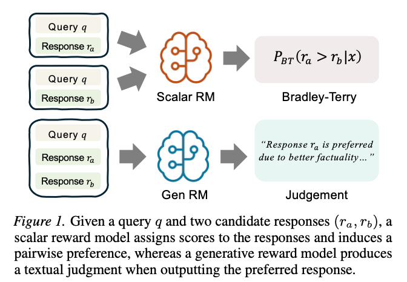

CAMEL: Confidence-Gated Reflection for Reward Modeling
ICML 2026 · arXiv:2602.20670 · Preprint first submitted 2026/02/24
Abstract
Reward models play a fundamental role in aligning large language models with human preferences. Existing methods predominantly follow two paradigms: scalar discriminative preference models, which are efficient but lack interpretability, and generative judging models, which offer richer reasoning at the cost of higher computational overhead. We observe that the log-probability margin between verdict tokens strongly correlates with prediction correctness, providing a reliable proxy for instance difficulty without additional inference cost. Building on this insight, we propose CAMEL, a confidence-gated reflection framework that performs a lightweight single-token preference decision first and selectively invokes reflection only for low-confidence instances. To induce effective self-correction, we train the model via reinforcement learning with counterfactual prefix augmentation, which exposes the model to diverse initial verdicts and encourages genuine revision. Empirically, CAMEL achieves state-of-the-art performance on three widely used reward-model benchmarks with 82.9% average accuracy, surpassing the best prior model by 3.2% and outperforming 70B-parameter models using only 14B parameters, while establishing a strictly better accuracy-efficiency Pareto frontier.
Overview
Efficient and interpretable reward modeling that invokes reflection only for low-confidence instances, establishing a stronger accuracy–efficiency Pareto frontier.

82.9% average accuracy · 14B model surpasses larger 70B models
Citation
Zirui Zhu; Hailun Xu; Yang Luo; Yong Liu; Kanchan Sarkar; Kun Xu; Yang You. (2026). CAMEL: Confidence-Gated Reflection for Reward Modeling. arXiv preprint 2602.20670. https://arxiv.org/abs/2602.20670
BibTeX for the arXiv version:
@misc{camel2026,
title = {CAMEL: Confidence-Gated Reflection for Reward Modeling},
author = {Zhu, Zirui and Xu, Hailun and Luo, Yang and Liu, Yong and Sarkar, Kanchan and Xu, Kun and You, Yang},
year = {2026},
url = {https://arxiv.org/abs/2602.20670},
eprint = {2602.20670},
archivePrefix = {arXiv}
}